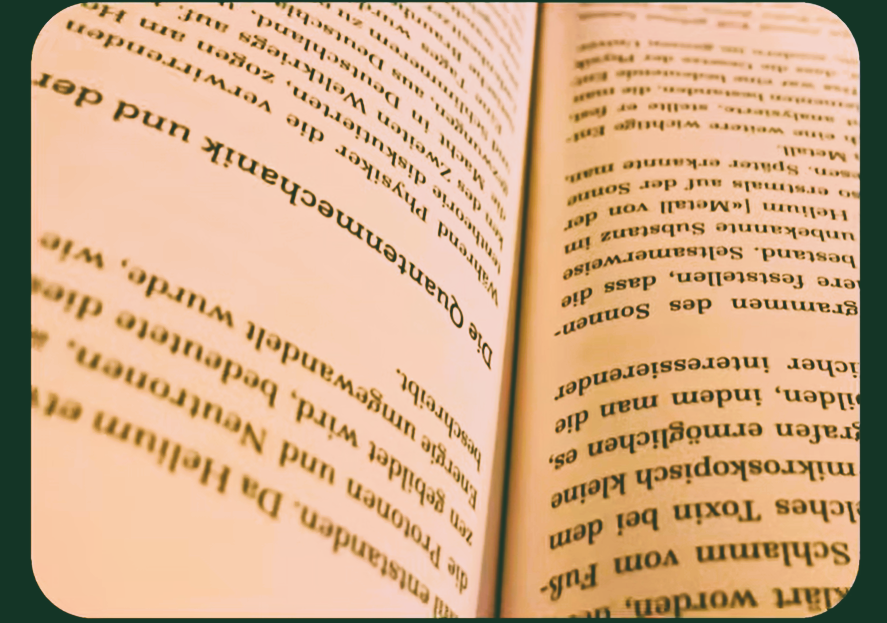
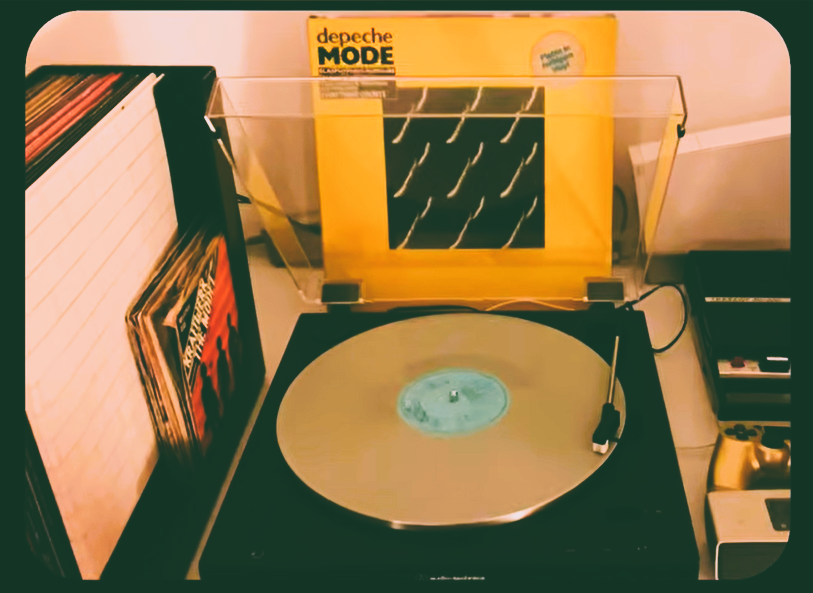

Did you ever find yourself finally pulling away your smartphone, which is pretty hard since it are glued to your eyes. And then you realize,
you've wasted the last 4 hours doomscrolling your brain cells away. Well, you're definetely not alone, in this blog I will give 3 ideas for things
to do instead of doomscrolling. (This is by the way a more elaborate blog-version of my youtube video by the same title (here), hope you enjoy!).

First of all, try reading a book. If you're anything like me, you probably have difficulties sitting down and immersing yourself in a literature.
I have two tips that helped me along the way:
1. Don't overachieve: It's easy to get too ambitious and set too big reading goals (I remember thinking I could read 700 pages of Dune in one
week, I did not succeed). Instead try setting smaller goals. I started reading one page a day, an embaressingly small amount. But more importantly,
It helped me get started! (After reading that one page I often continued reading, because why not?).
2. Read what you're genuinely interested in: When I first started to read, I only started the books that were massive and seemed impressive.
Obviously, that mindset didn't get me very far. When I finally started reading something I was actaully interested in, the whole experience felt way
more fun and rewarding! (I just picked up 'How to Be a High School Superstar: A Revolutionary Plan to Get into College by Standing Out' by Cal
Newport).
In a world where different apps and platforms are trying to catch our attention constantly, it's practically a skill to focus on one specific activity
at a time. For me listening to music is dfinetely an activity that makes me more relaxed and calm a bit from social medias overstimulation. I prefer
listening to music analog, but you do you! (I'm personally very much into 70s and 80s rock and older music in general :D)

On christmas eve, my grandparents gifted me a "Rolei Prego 90" film camera. I instantly fell in love with that instrument. I've already shot over 20
photos with it and I can't wait for the results to come back from he lab. I can only recommend this hobby as it's very fulfilling especially when using
film. :D
Thank you so much for taking the time to read this blog post, and thanks to all the people who watched my youtube video by the same title!
Hope this helped you,
Gabs - 11.03.2026